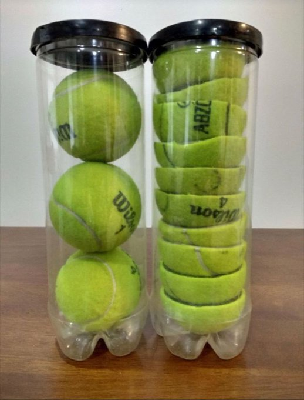

Si cortas las pelotas de tenis por la mitad podrás meter más en el tubo: uso eficiente del espacio y aumento de la productividad.
No obstante, ¡no podrás jugar al tenis!
Sé eficiente, sé productiva, pero mucho más importante: sé efectiva y no olvides tu propósito...
